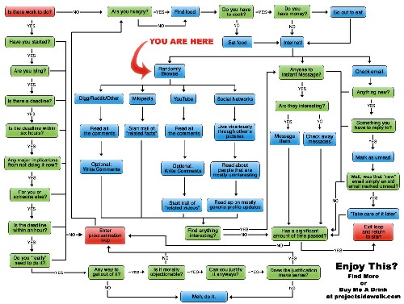
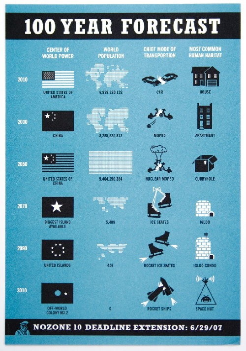
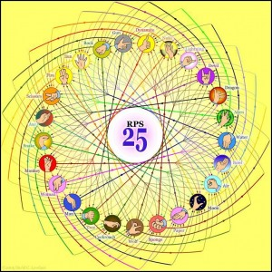

{kind=link}
Héhé, vous êtes découverts
Aissen’s digest
5 septembre 2008
Vous êtes ici

3 septembre 2008
26 août 2008
{kind=link}
25 août 2008
What will the world be like in 100 year?

{kind=link}
What will the world be like in 100 years? Funny estimate.
By Jennifer Daniel.
22 août 2008
Courte réflexion
Interessante vidéo à méditer (1min). Je n’en dis pas plus pour ne pas gâcher la surprise.
13 août 2008
Jan ken pon
Le pierre-feuille-ciseau est un jeu bien connu, et somme toute assez simple. Qu’y a-t-il à ajouter?
J’aime bien ce ptit jeu, équilibré dans sa variante par défaut, et si je ne suis pas un pro, je me débrouille pas trop mal.
J’ai même co-inventé une ptite variante à deux mains, mais ce n’est rien à coté de ce qu’a fait ce mec.
Ce n’est plus trois symboles qu’on fait avec la main, mais sept, neuf, onze, quinze, voire 25 :

Les possibilités augmentent de manière combinatoire !
Mais il ne s’est pas arrêté en si bon chemin, et a inventé l’ultime, le mythique RPS 101. Oui, c’est bien cela, 101 symboles, avec les deux mains, pour des possibilités infinies, tout en gardant l’équilibre du jeu!
{kind=link}
Pour finir, une courte vidéo sur l’ironie du janken/chifoumi/PFC/RPS :
Don’t do this on the road!
Don’t do this at home on the road!
12 août 2008
If they keep doing this…

Pas très frais, mais tellement vrai…
Si dépenser des sous-sous apporte une moins bonne expérience utilisateur que ne pas le faire, quel interêt?